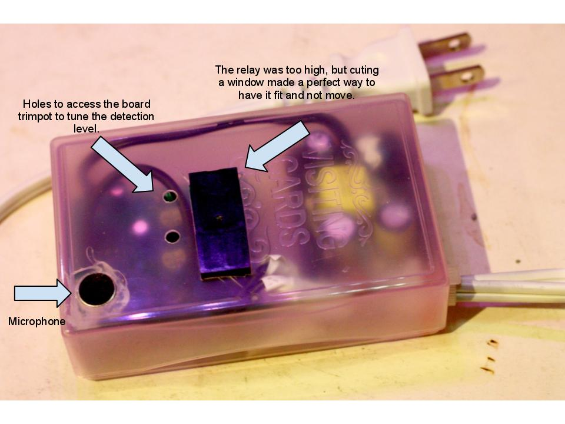

Summary
This is a re-edition of one of my previous project, the
Clapclap switch. However this one is different by two main aspects :
- It uses a ATtiny 2313 and detection is therefore based on a comparator rising hedge instead of polling infinately the ADC and searching for peaks. The comparison sensitivity will be managed through different voltage, itself tuned via potentiometers. A bit more "getho" execution compared to the overkill of the atmega328 and the ADC polling.
- Since using a ATtiny 2313 it will be developped with free tool WinAVR and not with the more than convenient Arduino API. It spices up the job and is a better training to whom wants to level up in terms of uController programming.
☞ You may also like the Clapclap 1386 which is an ulterior iteration of this project using easier to source components : Attiny13 and LM386, and also an even better PCB.
See for yourself!
Hall of fame :
Where to buy one ? Contact me by email (it'is on the left ←) : just the board or the DIY kit, I can provide both. 日本人の客様はメールでご注文お願いします。
How to build one ? Please see this page Clapclap2313 - Assembly instruction
Schema
Eagle version, files are on the google code repository
Original piece of sh... art made with Dia
- The variable resistor plugged on PB1 is used to control the voltage of Comp-, in our case the threshold of detection.
- The variable resistor plugged before the microphone can (will? is ?) be replaced by 2 fixed resistors (1k for both works ok according my tests). It might be useful to control the source volume, but since we have a control on the threshold of detection, the benefit gets limited if one can pick adapted values for the resistors...
- There is a typo as I've been kindly notified by [Girts], the amp is a HT82V739, not a HT28V739 (^^;)
Pictures

The latest iterations : am I getting good at this or what?
First version. Box closed, with its stylish vinyl tape-because-I've-not-hot-glued-everything-yet
Hot glued version for things to stick in place and also isolation.
Notice the legs ot the power adapter : it's AC, cable is held via a screw and a bolt (plugs in japan are flat with often a hole in it), then soldered (as much as possible) and glued for physical resistance and more than this isolation (!)
First batch of pcb printed via Seeedstudio offer. Nice, cheap, fast ... I think I'm in love...
Voila : the first pcb version, working just fine.
How to wire with the power plug : I have to redraw it each time, now it's done once and for all
Code
Good to know :
- You don't need to change the attiny2313 fuses, factory settings are good
- I must admit to my great shame that there is an issue with the code : if you keep the good rythme, you can turn on off without an end. Don't know why, it should not do that, it should detect the third clap-clap-clap and ignore it (second clap resets the last clap counter) but it doesn't. Any idea, I'm taking. Really. Sure it's a stupid miss, just can't see it.
What's inside / Parts list
Give or take, you should have it running for 500-600 JPY (6 USD ?). You'll need an additional 5v power source (a scavenged cell phone charger/iphone/usb charger/... is fine) and a electrical cable.
Points of interrests and errors to avoid
- AIN0 is the positive input of the comparator, AIN1 is the negative. They are referred as PB0 and PB1
- If you breadboard this and instead of microphone (post amplification) you use a switch:
- You want to pull down the AIN0 with a big (>10 kOhm) resistor, otherwise the input will be floating and subject to EMI resulting in random on/off
- The switch will not be debounced, so you might have multiple click
- You want to stabilize the power lines, otherwise you might end up again with false readings if you drive anything else, even a led. Use any 47uF%20 cap between %20 and - rails, as usual.
- You want to disable the internal pullup of AIN0 : PORTB &= ~(1<<PB0);
- PortB pins 0 & 1 must be input mode : DDRB = 0xFC;
- Setup properly the comparator and its interrupt (see the code)
- Once in the box, avoid having the microphone wires too close to the AC wires. It will generate so much perturbation that it will be detected as 50 Hz clap-clap and your system will get crazy. Hence you can see on my pictures the wires (yellow and black) of the mic going under the pcb, avoiding AC parasites.
Links